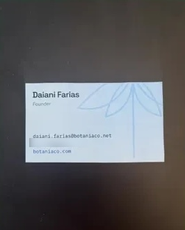

Assistência Inteligente para Negócios Modernos
Sua empresa,
com assistência inteligente.
A BOTAN.IA conecta o trabalho por trás da sua empresa, automatiza o que se repete e cria mais capacidade para clientes, entrega, estratégia e crescimento.
O trabalho por trás da empresa se acumula.
Um novo cliente pode encontrar você no Instagram, mandar uma mensagem, agendar por um link, preencher um formulário e pagar em outro lugar. O trabalho não deveria depender de você levar cada detalhe de um lugar para outro.
Cada tarefa é pequena. Juntas, são muita coisa para guardar na cabeça.

Onde quer que o trabalho comece, nós conectamos o que vem depois.
A BOTAN.IA trabalha com as ferramentas que você já usa. Você não precisa substituir o que já funciona.
O que a assistência inteligente pode assumir.
Cada assistente é desenhado em torno de como a sua empresa já funciona, para que haja menos coisas para guardar na cabeça e menos coisas dependendo da memória.
Agenda e agendamentos
Mantém agendamentos e calendários coordenados.
Cadastro de clientes
Registra os dados do cliente sem que você precise digitar tudo de novo em outro lugar.
Follow-up
Mantém as mensagens de rotina em andamento e mostra o que ainda precisa de atenção.
Relatórios
Reúne as informações de que você precisa em uma visão mais clara.
Operações
Conecta tarefas recorrentes e informações entre as ferramentas por trás da empresa.
Você continua no controle.
O sistema prepara.
Reúne o que é necessário e deixa a próxima etapa pronta.
Você decide.
Nada passa deste ponto sem você.
O sistema continua.
Depois da sua decisão, o restante segue.
Nem toda etapa precisa da sua aprovação. Você escolhe onde ficam os pontos de controle.
Como funciona
Observamos.
Entendemos onde estão o trabalho repetido e as etapas desconectadas.
Construímos.
Conectamos o que faz sentido e criamos a assistência em torno de como a empresa já funciona.
Implantamos.
Testamos com você e colocamos em uso em etapas claras.
Cuidamos.
Gerenciamos e aprimoramos o sistema conforme a empresa muda.
Quanto tempo você poderia recuperar por semana?
Escolha uma tarefa que você repete. Números aproximados são suficientes.
É tempo que você poderia redirecionar para clientes, entrega, vendas, estratégia ou simplesmente ter mais espaço para pensar.
Cerca de 2,8 horas por semana. Em um ano, 129 horas.
Uma estimativa com base em 46 semanas de trabalho por ano e semanas de 40 horas. Ajuda a mostrar para onde o tempo vai. Não é um resultado garantido.
Os contatos de um cliente, iguais no Google e no Outlook.
Um cliente digitava cada novo cartão de visita no Google Contatos e de novo no Outlook. Agora ele envia uma foto pelo WhatsApp. O assistente lê o cartão, verifica se a pessoa já está em uma das duas listas e pergunta antes de salvar qualquer coisa.
Ler o estudo de caso
Por que criei a BOTAN.IA
Por mais de uma década, apoiei executivos e equipes de liderança em organizações globais.
O que eu via se repetir
Essa experiência me mostrou algo que vale para empresas de todos os tamanhos. Sistemas desconectados consomem, sem alarde, uma quantidade enorme de tempo e de espaço mental.
- As informações ficam em lugares diferentes.
- O follow-up depende de alguém se lembrar.
- Os mesmos dados são digitados mais de uma vez.
- Pequenas tarefas ficam na sua cabeça porque os sistemas ao redor não estão carregando trabalho suficiente.
Por que a BOTAN.IA existe
A BOTAN.IA nasceu desse problema. Eu quis levar o raciocínio por trás de uma boa assistência executiva para os sistemas por trás de uma empresa moderna.
Contexto, organização, antecipação, critério e acompanhamento até o fim.
A BOTAN.IA conecta o trabalho para que donos de empresas e equipes não precisem carregar sozinhos cada detalhe operacional.
- Experiência em
- QualcommGoogle via VacoBaker TillyKPMGBASF
Uma empresa funciona como um ecossistema.
Uma mensagem afeta um agendamento. Um agendamento afeta uma agenda. Um novo cliente afeta arquivos, pagamentos, follow-up e entrega.
A BOTAN.IA é construída em torno dessas conexões.
Comece com uma conversa.
Conte onde o trabalho se acumula: as mensagens, os agendamentos, o follow-up. Mostramos o que poderia ser conectado.